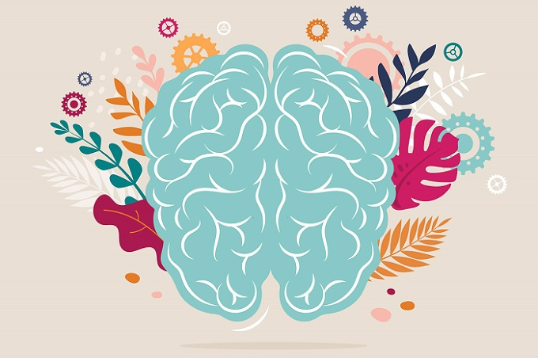
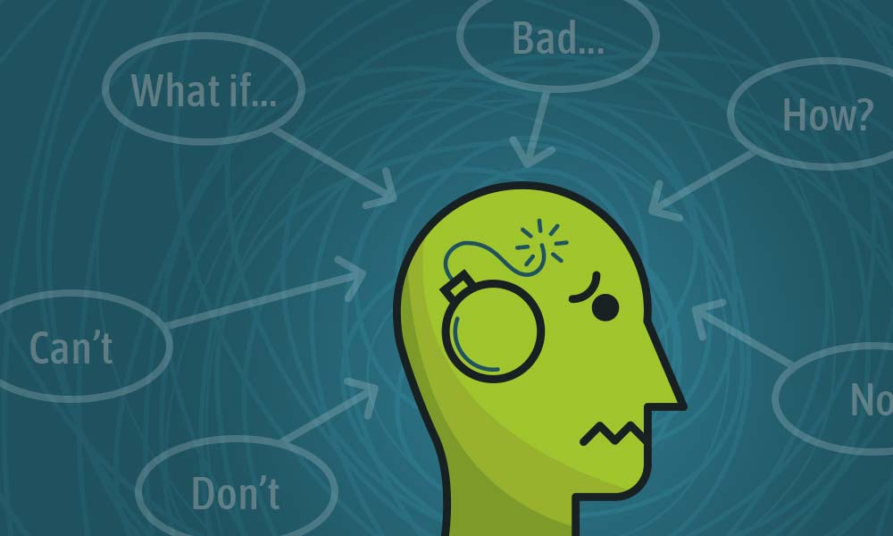

What are the mental health benefits of exercise?

Exercise is not just about aerobic capacity and muscle size. Sure, exercise can improve your physical health and your physique, trim your waistline, improve your sex life, and even add years to your life. But that’s not what motivates most people to stay active. People who exercise regularly tend to do so because it gives them an enormous sense of well-being. They feel more energetic throughout the day, sleep better at night, have sharper memories, and feel more relaxed and positive about themselves and their lives. And it’s also a powerful medicine for many common mental health challenges. Regular exercise can have a profoundly positive impact on depression, anxiety, and ADHD. It also relieves stress, improves memory, helps you sleep better, and boosts your overall mood. And you don’t have to be a fitness fanatic to reap the benefits. Research indicates that modest amounts of exercise can make a real difference. No matter your age or fitness level, you can learn to use exercise as a powerful tool to deal with mental health problems, improve your energy and outlook, and get more out of life.
Exercise and depression
Studies show that exercise can treat mild to moderate depression as effectively as antidepressant medication—but without the side-effects, of course. As one example, a recent study done by the Harvard T.H. Chan School of Public Health found that running for 15 minutes a day or walking for an hour reduces the risk of major depression by 26%. In addition to relieving depression symptoms, research also shows that maintaining an exercise schedule can prevent you from relapsing. Exercise is a powerful depression fighter for several reasons. Most importantly, it promotes all kinds of changes in the brain, including neural growth, reduced inflammation, and new activity patterns that promote feelings of calm and well-being. It also releases endorphins, powerful chemicals in your brain that energize your spirits and make you feel good. Finally, exercise can also serve as a distraction, allowing you to find some quiet time to break out of the cycle of negative thoughts that feed depression.
Exercise and anxiety

Exercise is a natural and effective anti-anxiety treatment. It relieves tension and stress, boosts physical and mental energy, and enhances well-being through the release of endorphins. Anything that gets you moving can help, but you’ll get a bigger benefit if you pay attention instead of zoning out. Try to notice the sensation of your feet hitting the ground, for example, or the rhythm of your breathing, or the feeling of the wind on your skin. By adding this mindfulness element—really focusing on your body and how it feels as you exercise—you’ll not only improve your physical condition faster, but you may also be able to interrupt the flow of constant worries running through your head.
Exercise and stress

Ever noticed how your body feels when you’re under stress? Your muscles may be tense, especially in your face, neck, and shoulders, leaving you with back or neck pain, or painful headaches. You may feel a tightness in your chest, a pounding pulse, or muscle cramps. You may also experience problems such as insomnia, heartburn, stomachache, diarrhea, or frequent urination. The worry and discomfort of all these physical symptoms can in turn lead to even more stress, creating a vicious cycle between your mind and body. Exercising is an effective way to break this cycle. As well as releasing endorphins in the brain, physical activity helps to relax the muscles and relieve tension in the body. Since the body and mind are so closely linked, when your body feels better so, too, will your mind.
Exercise and ADHD
Exercising regularly is one of the easiest and most effective ways to reduce the symptoms of ADHD and improve concentration, motivation, memory, and mood. Physical activity immediately boosts the brain’s dopamine, norepinephrine, and serotonin levels—all of which affect focus and attention. In this way, exercise works in much the same way as ADHD medications such as Ritalin and Adderall.
Exercise and PTSD and trauma
Evidence suggests that by really focusing on your body and how it feels as you exercise, you can actually help your nervous system become “unstuck” and begin to move out of the immobilization stress response that characterizes PTSD or trauma. Instead of allowing your mind to wander, pay close attention to the physical sensations in your joints and muscles, even your insides as your body moves. Exercises that involve cross movement and that engage both arms and legs—such as walking (especially in sand), running, swimming, weight training, or dancing—are some of your best choices. Outdoor activities like hiking, sailing, mountain biking, rock climbing, whitewater rafting, and skiing (downhill and cross-country) have also been shown to reduce the symptoms of PTSD.
Other mental health benefits of exercise
Even if you’re not suffering from a mental health problem, regular physical activity can still offer a welcome boost to your mood, outlook, and mental well-being. Exercise can help provide:
Sharper memory and thinking.
The same endorphins that make you feel better also help you concentrate and feel mentally sharp for tasks at hand. Exercise also stimulates the growth of new brain cells and helps prevent age-related decline.
Higher self-esteem.
Regular activity is an investment in your mind, body, and soul. When it becomes habit, it can foster your sense of self-worth and make you feel strong and powerful. You’ll feel better about your appearance and, by meeting even small exercise goals, you’ll feel a sense of achievement.
Better sleep.
Even short bursts of exercise in the morning or afternoon can help regulate your sleep patterns. If you prefer to exercise at night, relaxing exercises such as yoga or gentle stretching can help promote sleep.
More energy.
Increasing your heart rate several times a week will give you more get-up-and-go. Start off with just a few minutes of exercise per day, and increase your workout as you feel more energized.
Stronger resilience.
When faced with mental or emotional challenges in life, exercise can help you build resilience and cope in a healthy way, instead of resorting to alcohol, drugs, or other negative behaviors that ultimately only make your symptoms worse. Regular exercise can also help boost your immune system and reduce the impact of stress.